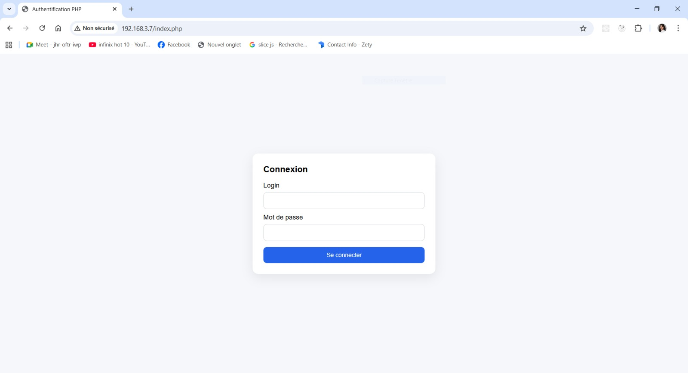
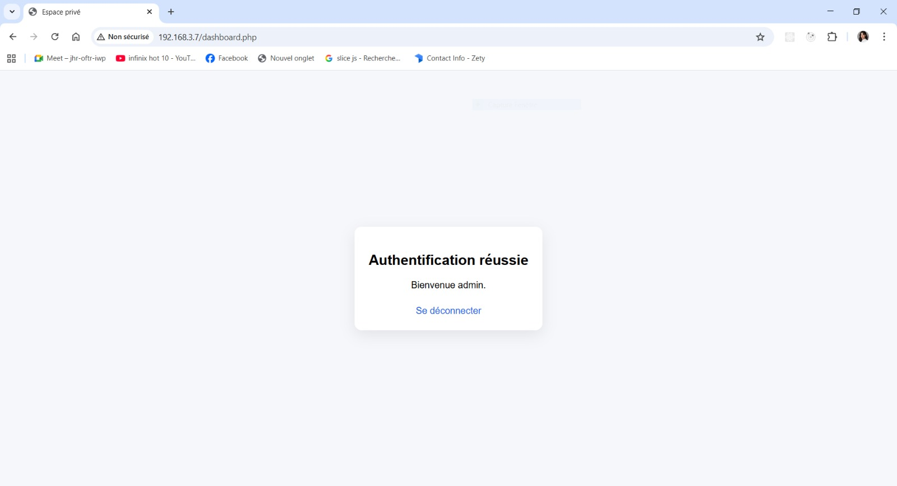
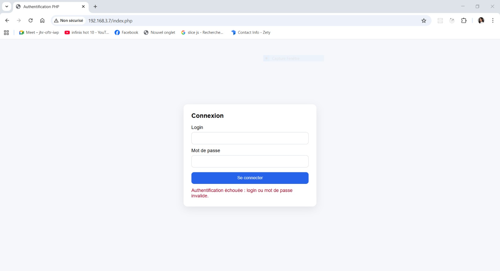
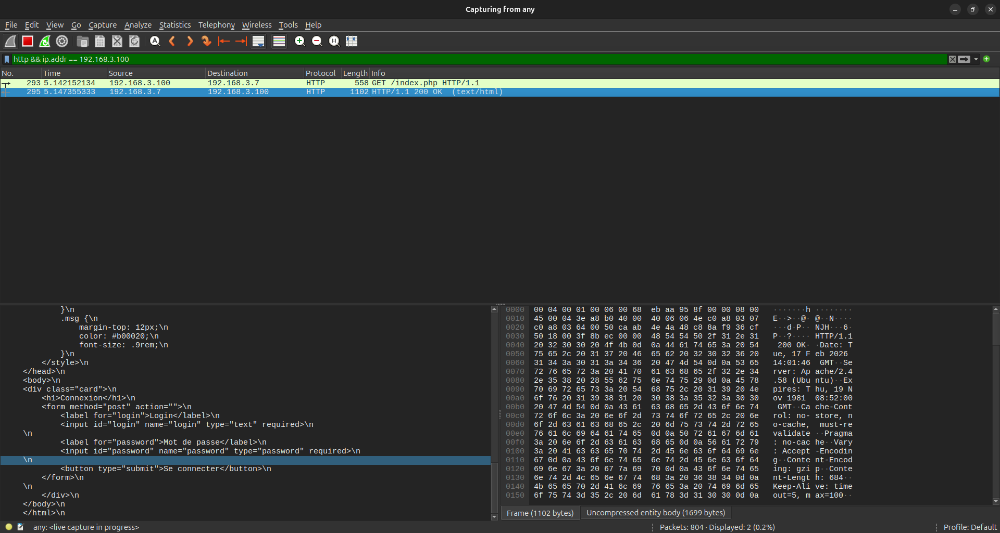
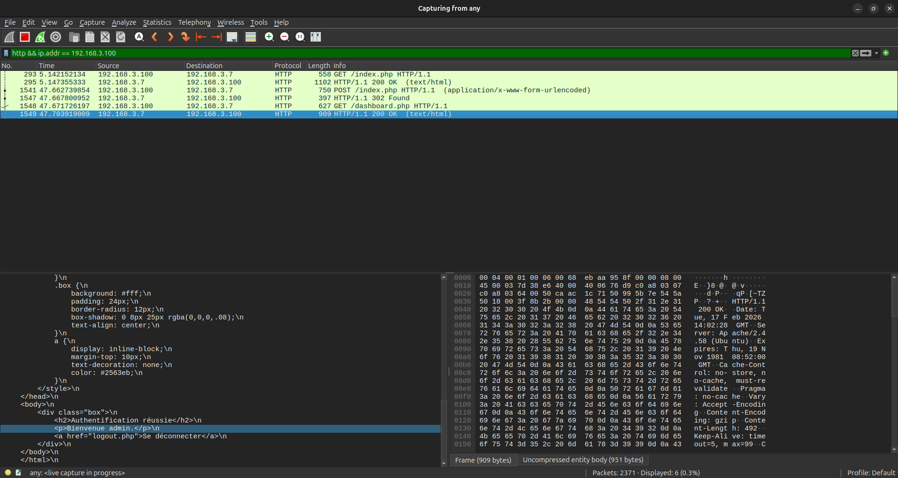
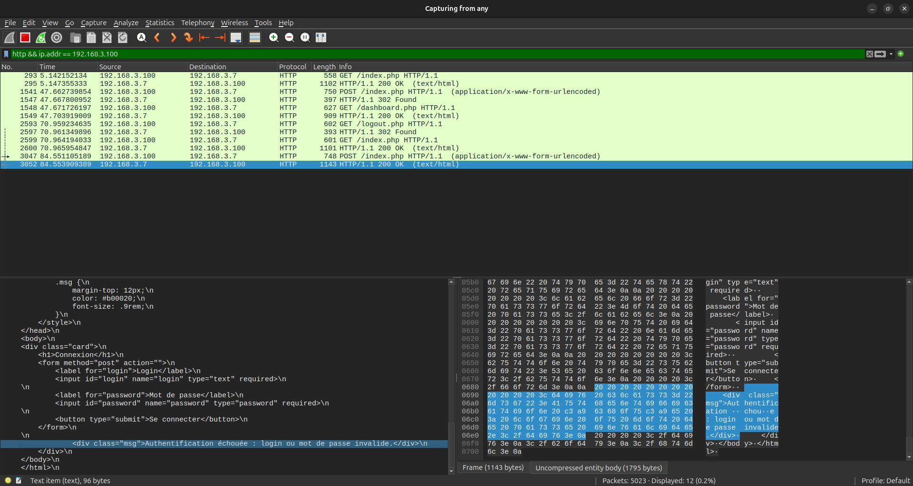
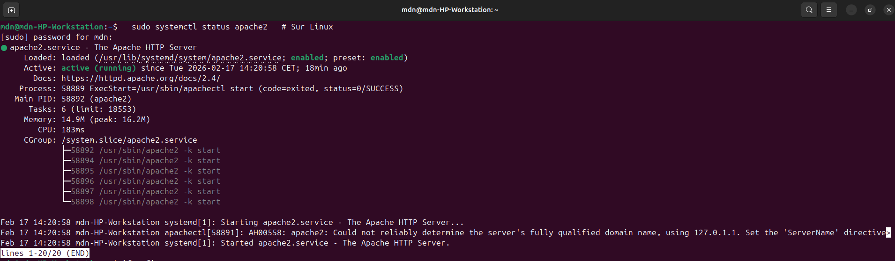
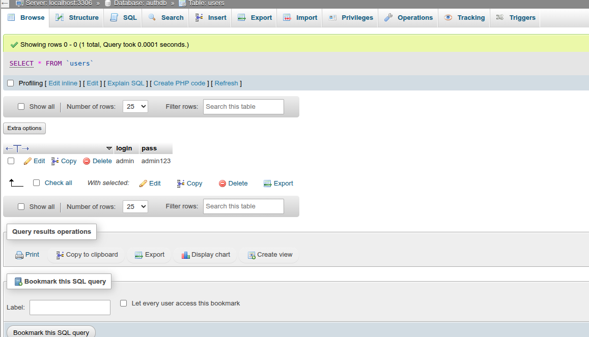

Installation Apache2, PHP, MySQL, authentification PHP et analyse Wireshark.
Date : 17/02/2026 | Travail : Individuel
Projet : Application PHP d'authentification simple
1) Objectif du TP
Mettre en place une application Web PHP côté serveur avec :
un serveur HTTP Apache2,
un moteur PHP,
une base de données MySQL,
une page d’authentification (login/mot de passe),
des tests d’authentification réussie et échouée côté client,
une capture réseau avec Wireshark.
2) Contexte et architecture
Serveur : machine hébergeant Apache2, PHP, MySQL et les fichiers PHP.
Client : machine distante qui accède à l’application via navigateur.
Communication : HTTP entre client et serveur (port 80).
Flux logique :
Le client envoie une requête vers la page de connexion.
Le serveur renvoie le formulaire d’authentification.
Le client soumet login + password.
Le serveur vérifie les informations dans MySQL.
En cas de succès : création de session PHP puis redirection vers l’espace privé.
En cas d’échec : affichage d’un message d’erreur.
3) Fichiers du projet analysés
config.php : configuration de connexion MySQL (authdb, utilisateur root), initialisation de la connexion et gestion d’erreur.
index.php : page de connexion, traitement du formulaire et vérification SQL avec requête préparée.
dashboard.php : page privée affichée uniquement si la session est active.
logout.php : destruction de session et retour à la page d’authentification.

Page de connexion affichée côté client.

Connexion réussie (dashboard).

Connexion échouée (message d’erreur).

Annexe A — Formulaire de connexion (autre vue).

Annexe B — Dashboard après connexion.

Annexe C — Message d’erreur lors d’un échec.
4) Mise en place serveur (Apache2, PHP, MySQL)
4.1 Installation des composants (référence)
apache2
php
libapache2-mod-php
mysql-server
php-mysql
Après installation :
démarrage/activation d’Apache2 et MySQL,
copie des fichiers PHP dans le dossier Web serveur,
vérification de l’état du service Apache (voir ci-dessous).

État du service Apache2 côté serveur.
4.2 Déploiement
Les fichiers PHP ont été déployés dans le répertoire Web du serveur. Commande observée dans l’historique terminal : copie des .php vers /var/www/html/.
5) Base de données MySQL
5.1 Schéma minimal demandé
Base : authdb Table : users avec deux colonnes : login et pass.
CREATE DATABASE IF NOT EXISTS authdb;
USE authdb;
CREATE TABLE IF NOT EXISTS users (
login VARCHAR(50) PRIMARY KEY,
pass VARCHAR(255) NOT NULL
);
INSERT INTO users (login, pass) VALUES ('admin', 'admin123');

Table MySQL contenant les identifiants valides.
6) Fonctionnement de l’authentification
6.1 Traitement applicatif
Dans index.php : récupération des champs du formulaire, validation des champs non vides, exécution d’une requête préparée SELECT login FROM users WHERE login = ? AND pass = ? LIMIT 1, création de session ou message d’échec.
Dans dashboard.php : contrôle d’accès via session, affichage “Authentification réussie”.
Dans logout.php : fermeture de session, redirection vers la page de connexion.
6.2 Résultats attendus et observés
Page de connexion affichée :
Page de connexion (client)Annexe A — Formulaire de connexion